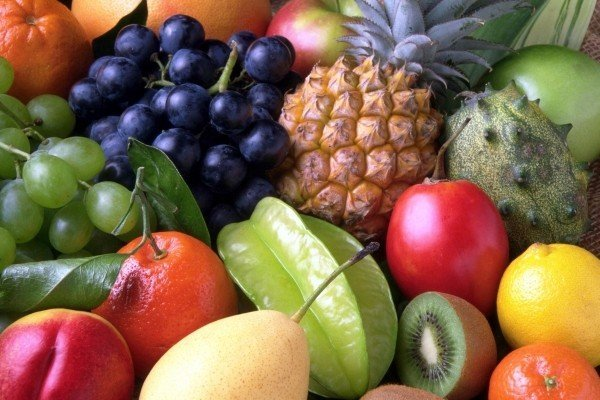
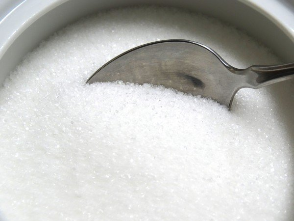
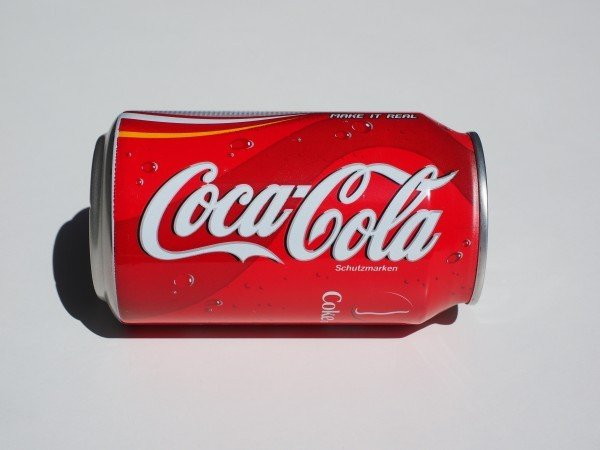

A ‘moderate’ intake of refined sugar can be an acceptable part of a healthy diet. Experts define a moderate intake as about 10 per cent of the total energy intake per day. However, people who consume a lot of sugary food and drinks at the expense of more nutritious food choices, may be taking in a lot of ‘empty calories’.
Adding a little sugar to nutritious grain foods, such as wholegrain bread and cereals, may encourage people to eat more of these foods by making them more tasty.
There has been a lot of debate about the link between high sugar intake and being overweight or obese. But there is general agreement that energy (kilojoules) above the body’s needs will be stored as fat.
Sugar is a form of carbohydrate and it provides the same amount of energy or kilojoules (kJ) per gram as other forms of carbohydrates found in breads, rice, pasta and fruits.
One gram of carbohydrate provides 16 kJ of energy. One gram of fat provides 37 kJ. Therefore, fats in food contribute double the energy than the equivalent amounts provided by sugar.
Although sugar provides less energy than fat, it can contribute to the ‘energy density’ (number of kilojoules) of foods and drinks. It’s easy to overindulge in foods, especially drinks, with high sugar content.
Having too much sugar is not the only reason for obesity or being overweight, but it does add to the amount of kilojoules in food. Eating too much of any food, without doing enough exercise, will cause you to become overweight.
Sweetened drinks are heavily advertised, cheap and commonly available. In Australia, the consumption of soft drinks, which are sweetened with sugar, has increased by 30 per cent in 10 years.
The standard serving size for soft drink has also increased. Ten years ago, soft drink was available in 375 ml cans. Soft drinks are now commonly sold in 600 ml bottles, which provide up to 16 teaspoons of sugar.
For an average 14 year old girl, a 600 ml bottle of soft drink alone will provide more than 12 per cent of her daily energy needs. This means she would exceed the recommended energy intake from refined sugar with just one drink.
Studies of children in the United States found that drinking more sweetened soft drink was linked to increasing overweight and obesity. It’s best to keep these drinks to a minimum.
Sugars are often found together with fats in foods like chocolate, biscuits and cakes. A high fat intake is quite likely to contribute to being overweight or obese because fat is very ‘energy dense’.
It is a healthy choice to limit both the fat and the sugar content in the foods you eat. Lots of commercially produced sweet foods contain high levels of saturated fat, which will increase your blood cholesterol levels and your risk of heart disease.
A small amount of sugar is safe for people with diabetes
There is no evidence that a diet high in sugar directly causes either type 1 or type 2 diabetes. However, being overweight or obese is a risk factor for type 2 diabetes and perhaps someone who is overweight might also eat a lot of sugar.
In the past, people with diabetes were told to avoid eating all foods containing refined sugar. This was because it was believed the sugar would have a bad effect on their blood glucose levels. However, more recent research on the glycaemic index (see below) has shown that sugar affects blood glucose levels less than some other more starchy foods, like refined bread and breakfast cereal.
People with diabetes can have a small amount of sugar in their diet. If you are adding sugar, it is best to add it to healthier foods such as wholegrain breads and cereals. For example, adding one to two teaspoons of regular jam spread on wholegrain bread is okay.
People with diabetes should limit or avoid foods in which the main ingredient is sugar, such as sweets and cakes. It is also important to maintain a healthy weight to manage diabetes.
We first divide this type of sugar into two categories: natural sugar and added sugar.

Natural Sugar

Added Sugar
Natural sugars include fructose in fruits and lactose in milk. This sugar is relatively healthy.
Adding sugar can be said to be the main cause of obesity in the body. For most people, the daily energy intake is enough or has exceeded the standard. Eating too much added sugar will not only bring us more nutrients, but also increase energy intake and increase risk of obesity.
The dietary guidelines recommend that the daily intake of sugar should not exceed 10% of total calories.
Example
If the Suggested Daily Calories Intake is 2000 kcal, then 10% is equivalent to 200 kcal. There are 4 kilocalories per gram of sugar, that is, no more than 50 grams of added sugar.

A 250 ml cola contains 28 grams of sugar.
The sugar content of a biscuit can vary from 5-20 grams depending on the size and method of preparation.
A bag of sugar into the coffee is about 3-5 grams.
The average Australian consumes almost double the amount of sodium they need for good health. The National Health and Medical Research Council (NHMRC) advises that Australian adults should aim to consume no more than one teaspoon (5 grams) of salt a day (or 2,000 mg of sodium a day) in order to prevent chronic disease.
Aiming for less than this is perfectly okay too. An adult body only needs around 1 – 2 g of salt (460 – 920mg sodium) per day to function.
Salt intake above 2,000 mg per day is associated with high blood pressure, which is a risk factor for kidney disease and cardiovascular disease (such as heart disease and stroke).
Australian children are eating too much salt too. In fact, almost three quarters of Victorian school children are eating more than the recommended amount. This can lead to lifelong unhealthy eating habits, and have a negative effect on children’s blood pressure. This can lead to heart attacks and strokes in the future.
The recommended daily salt intake for children varies depending on their age, as follows:
The relationship between sodium intake and blood pressure is well established. Populations with a high average salt intake have a higher average blood pressure and higher levels of hypertension (high blood pressure). Australians consume nearly double the amount of sodium that is recommended to reduce the risk of cardiovascular disease.
Reducing the amount of salt you have will lower high blood pressure – the extent depends on your age, current blood pressure and other factors such as the amount of exercise you do, body weight, stress and alcohol intake. People with high blood pressure, diabetes or chronic kidney disease and those who are older or overweight are particularly susceptible to the effect of too much sodium on blood pressure.
There is strong evidence that sodium reduction lowers blood pressure in people with normal blood pressure and good evidence that consuming a diet low in sodium reduces blood pressure in children.
heart failure
kidney problems and kidney stones
oedema (fluid retention)
stroke
stomach cancer
left ventricular hypertrophy (thickening of heart muscle)
osteoporosis.
A high level of salt intake increases the amount of calcium excreted in the urine, which may also contribute to osteoporosis and increased risk of fracture.
The balance of sodium and water in the body can also be disrupted if there is not enough water. This may be caused by a damaged thirst mechanism or by limited access to water. Hypernatremia is a very serious condition that occurs when your sodium levels rise above 145 milliequivalents per litre (mEq/L). It can lead to death. A major symptom is thirst and treatment usually involves controlled water replacement
The body loses salt through urine, perspiration, vomiting and diarrhoea. If too much salt is lost, the level of fluid in the blood will drop. Hyponatremia is a condition that occurs when the sodium in your blood falls below the normal range of 135–145 mEq/L. In severe cases, low sodium levels in the body can lead to muscle cramps, nausea, vomiting and dizziness. Eventually, lack of salt can lead to shock, coma and death.
Severe salt loss is very unlikely to happen because our diets contain more than enough salt. The only time this is likely to occur is when someone has acute gastroenteritis (causing vomiting and diarrhoea), severe sweating or water intoxication (from drinking too much water).
Some people believe that salt has to be replaced during hot weather or strenuous exercise to avoid muscle cramps. This is not correct. What you need to replace is water.
The human body can happily survive on just one gram of salt a day, as hormones keep a check on sodium levels and make adjustments for hot weather. A genuine sodium shortage brought on by hot weather or exercise is extremely rare, even among hard-working athletes.
The muscle cramps that sometimes follow a bout of sweating are due to dehydration, not lack of salt. To prevent cramps, drink plenty of water on hot days and before, during and after exercise. This will also help to even out the water–sodium ratio in the body.
Potassium is important for the nerves, muscles and heart to work properly. It also helps to lower blood pressure. However, some people with kidney disease, or who are taking some medications, need to be careful not to get too much potassium in their diet.
Our bodies are designed for a high-potassium diet, not a high-salt diet. Food processing tends to lower the potassium levels in many foods while increasing the sodium content. It is much better to eat unprocessed foods such as fruit, vegetables and lean meats, eggs, fish and other healthy, everyday foods.
When selecting processed everyday foods such as wholegrain breads and cereals, select lower salt options. Foods high in potassium include bananas, apricots, mushrooms and spinach.
Many foods – wholegrains, meat and dairy products – naturally contain small amounts of sodium, while highly processed foods tend to contain large amounts.
Some foods contain more than you may expect. For example:
A jam sandwich has only 30 per cent less salt than a vegemite sandwich, because most of the salt comes from the bread.
Sea salt, onion, celery or garlic salts are not low-sodium substitutes.
A bowl of cornflakes has about the same amount of salt as a small packet of plain chips.
Some sweet biscuits contain as much or more salt than savoury biscuits.
Ricotta, cottage, mozzarella and Swiss cheeses are lower in salt than most other cheeses.
To reduce the amount of salt in your diet, slowly reduce your intake (over several weeks), then completely avoid adding salt at the table, and when cooking or preparing meals.
Consider
using dry or fresh herbs like parsley, oregano, thyme, dill, basil or a dry herb mix to add flavour
using spices and other flavour enhancers like garlic and chili
lemon or lime juices are excellent flavour enhancers and often make meats more tender.
Experiment with small amounts and use a recipe book to get ideas on what flavours go well together. For example, curry powder enhances the flavour of potatoes or eggs and vegetables go nicely with balsamic vinegar and olive oil.
If you currently use quite a lot of salt in cooking or at the table, reducing this is even more important. For the average person, this accounts for around 25 per cent of their total salt intake and is one easy action you can take to reduce your sodium intake. Your taste buds adapt to lower salt levels in a matter of weeks, so gradually reducing salt is a key factors to success.
While reducing the salt you add at the table in when cooking or preparing meals, you should also focus on selecting foods that contain less ‘hidden’ salt because this accounts for around 75 per cent of all salt in most people’s diet. When shopping:
Choose reduced salt bread and breakfast cereals – bread is a major source of sodium in the diet.
Buy fresh vegetables or select lower sodium canned varieties.
Choose products with low salt (less than 120 mg sodium/100 g) or ‘salt-free’ versions of commonly used foods such as baked beans, margarine, commercial sauces, pre-prepared meals and other foods.
Some people believe that sea salt is a healthier alternative to normal table salt, but both are composed of sodium chloride.
Our bodies need iodine to make sure our thyroid gland and the hormones that regulate our metabolism work normally. Most bread in Australia and New Zealand is now required by law to use iodised salt in place of non-iodised salt, although bread labelled as ‘organic’ is exem
It is expected that this will make sure most Australian adults and children will consume sufficient iodine. This may not be the case for pregnant and breastfeeding women, who may need a dietary supplement. Low iodine status in the mother can affect the brain development of the child.
Another good way to make sure you get enough iodine is to eat seafood at least once a week. However, some types of fish contain high levels of mercury, which is dangerous to a developing fetus. Pregnant women must take care when choosing the types of fish they eat during pregnancy to reduce this risk.
Vegetarians or people who do not eat seafood can get iodine from multivitamin supplements.
Low-carbohydrate (low-carb) diets are popular for weight loss. The basic reason for the recommendation to eat fewer carbohydrates is the belief that carbohydrates cause weight gain.
The most common source of carbohydrates is grain foods such as bread, rice, pasta, crackers, barley, semolina, polenta and bulgur. Low-carb diets generally recommend limiting the amounts of these foods eaten.
However, this is misleading, because weight gain comes from an excess in overall kilojoules (or energy), which can come from any food source, including foods that are lower in carbohydrates and higher in fat or protein.
In fact, the Australian Dietary Guidelines states there is probably an association between eating three to five serves of grain (cereal) foods per day (mainly wholegrain) and reduced risk of weight gain.
The best way to maintain a healthy weight is to combine a balanced diet that includes fruits and vegetables, whole grains, lean meats and alternatives, legumes and low-fat dairy products like milk, yoghurt and cheese with daily exercise.
Very low-carbohydrate diets are unlikely to meet your daily nutritional needs. Advocates of these diets advise people to consume kilojoules mainly from protein and fat sources, and often recommend eating less than 100 g of carbohydrate per day.
Many health professionals do not support these diets as they can have a high fat content (particularly saturated fat) and tend to restrict important food sources of nutrients.
Very low-carb diets tend to contain few fruits and vegetables and may be:
high in saturated fat
nutritionally inadequate because they are low in thiamine, folate, vitamins A, E and B6, calcium, magnesium, iron and potassium
low in fibre
missing important antioxidants and phytochemicals.
Typical foods eaten on a low-carbohydrate diet include beef, chicken, bacon, fish, eggs and non-starchy vegetables, as well as fats such as oils, butter and mayonnaise. Foods that are restricted include many types of fruit, bread, cereals and other grains, starchy vegetables and dairy products other than cheese, cream or butter.
six serves of grain (cereal) foods for most adults. One serve equals one slice of bread, half a cup of cooked porridge or half a cup of cooked grains such as pasta, rice, quinoa, polenta
two serves of fruit. One serve equals one apple, orange or banana, one cup of canned fruit (no added sugar) or four dried apricot halves (dried fruit should only be consumed sometimes because it is a concentrated source of sugar and can stick to the teeth, increasing the risk of tooth decay)
five serves (women) or six serves (most men) of vegetables. One serve equals one cup of salad vegetables, half a cup of cooked dried beans or legumes, half a potato or half a cup of other cooked vegetables (broccoli, spinach, carrots)
two and a half serves of milk, yoghurt, cheese and alternatives for most adults. One serve equals one cup of milk, two slices (40 g) of cheese or one small tub (200 g) of yoghurt
two to three serves of meat or meat alternatives. One serve equals 65 g cooked lean beef, lamb veal or pork, 80 g cooked chicken, 100 g cooked fish or one small can of fish, two large eggs, one cup of canned beans, 170 g tofu or 30 g nuts or seeds.
Typical foods eaten on a low-carbohydrate diet include beef, chicken, bacon, fish, eggs and non-starchy vegetables, as well as fats such as oils, butter and mayonnaise. Foods that are restricted include many types of fruit, bread, cereals and other grains, starchy vegetables and dairy products other than cheese, cream or butter.
In the short term, low-carbohydrate diets may cause you to lose weight because they restrict kilojoules or energy. The body begins to use body stores of glucose and glycogen (from the liver and muscles) to replace the carbohydrates it is not getting from food. Around 3 g of water is needed to release 1 g of glycogen, so the rapid initial weight loss on a low-carbohydrate diet is mostly water, not body fat.
As carbohydrate stores are used up, the body begins to rely on other sources of fuel such as fat. This can lead to the development of ketones in the body, which can make the body acidic. This can lead to metabolic changes, which may be dangerous for some people, such as those with diabetes.
Some people may also experience problems with a low-carbohydrate diet, including:
The long-term safety of a diet very low in carbohydrates but high in saturated fat is still uncertain, and the potential effects on a person’s health are not known. Follow-up studies are needed over years to determine the safety of very low-carb diets.
Possible long-term effects of very low carb diets may include:
Weight gain – when a normal diet is resumed, some muscle tissue is rebuilt, water is restored and weight quickly returns.
Bowel problems – restricted intake of antioxidants and fibre from fruits and vegetables can increase a person’s risk of constipation.
Dieting problems – such as the ‘yoyo’ effect where people lose and regain weight many times over a long period of time, rather than sustaining weight loss. Currently, there is not enough evidence to support the adoption of very low carb diets for long term weight loss.
High cholesterol, abdominal obesity and obesity-related disorders – diets that are high in protein and fats are associated with a number of conditions, including heart disease, diabetes and cancer. This can occur if the diet is very high in fat, particularly from high-fat meats such as salami, sausages and bacon.
Kidney problems – can occur in people with impaired kidney function or diabetes.
Osteoporosis and related conditions – are due to loss of calcium from the bones.
A healthy diet high in fruits and vegetables, wholegrains, legumes and low-fat dairy products, and moderate in fat and kilojoules that is balanced with daily physical activity, is the best way to lose weight and keep it off.
Vegetarians and people who consume predominantly plant-based diets are generally slimmer and have much lower rates of obesity, heart disease and cancer, compared to people who eat meat-based diets. This supports current thinking that diets high in unrefined carbohydrates help to prevent overweight and obesity.
Ultimately, to avoid weight gain, energy intake should not be more than energy output over a period of time. Avoiding large portion sizes and limiting intake of saturated fats and added sugars will help keep energy intake in check. Regular exercise is also critical for long-term weight loss success.
If you do choose to follow a low-carbohydrate diet, do not avoid carbohydrates completely – you need some in your diet for fuel and to metabolise fat. Choose carbohydrate-rich foods that are unrefined or unprocessed, including wholegrains and fruit, rather than the more refined and energy-dense forms such as cakes, sweets and soft drinks. Have a variety of vegetables daily.
Select a variety of protein-rich foods that are also low in saturated fat, for example:
lean cuts of red meat
fish (including fatty fish)
lean chicken and pork.
You could also select protein-rich foods that are plant based, for example:
nuts
legumes such as beans and pulses
soy products, including tofu.
Choose fats from plant sources (such as olives, olive oil, canola oil, peanuts, peanut oil, soy or soy oil) rather than from animal sources (butter or meat fat).
The amount of protein you need in your diet depends on your weight, age and health. As a rough guide, the recommended dietary intake (RDI) for protein (measured in grams per kilogram of bodyweight) is:
0.75 g/kg for adult women
0.84 g/kg for adult men
Around 1 g/kg for pregnant and breastfeeding women, and for men and women over 70 years.
For example, a 75 kg adult male would need 63 g of protein per day. It is recommended that 15 to 25 per cent of total energy intake per day is from protein sources. The human body can’t store protein and will excrete any excess. Therefore, the most effective way of using the daily protein requirement is to eat small amounts at every meal. Using the example of the 75 kg male above, this would require that he eats approximately 21 g of protein at three meals each day.
The needs of children and adolescents also vary according to their age and weight. A full list of recommendations for dietary protein is available from the Australian Nutrient Reference Values (NRVs) website.
Most Australians eat far more protein than they actually need, so deficiencies are rare.
some grain and cereal-based products are also sources of protein, but are generally not as high in protein as meat and meat alternative products.
The Australian Dietary Guidelines recommend particular serves per day from the lean meat and poultry, fish, eggs, tofu, nuts and seeds and legumes/beans food category, including:
men aged 19-50 years = 3 serves
men aged 51 years and over = 2 ½ serves
women aged 19-50 years = 2½ serves
women aged 51 years and over = 2 serves
pregnant women = 3 ½ serves
breastfeeding women = 2 ½ serves.
A standard serving size is one of:
65 g cooked lean meats such as beef, lamb, veal, pork, goat or kangaroo (about 90-100 g raw)
80 g cooked lean poultry such as chicken or turkey (100 g raw)
100 g cooked fish fillet (about 115 g raw weight) or one small can of fish
2 large eggs
1 cup (150 g) cooked dried beans, lentils, chickpeas, split peas or canned beans (preferably with no added salt)
170 g tofu
30 g nuts, seeds, peanut or almond butter or tahini or other nut or seed paste (no added salt).
The daily recommendations for adults for foods from the milk, yoghurt, cheese and/or alternatives (mostly reduced fat) group are:
men aged 19-70 years = 2 ½ serves
menu aged 70 years and over = 3 ½ serves
women aged 19-50 years = 2 ½ serves
women aged 51 years and over = 4 serves.
A serve could include either:
250 ml (1 cup) fresh, UHT long life, reconstituted powdered milk or buttermilk
Proteins are made up of chains of smaller building blocks called amino acids, which are chemically linked to each other. There are about 20 different amino acids that can be put together in different combinations to make up the millions of proteins found in nature. A protein can consist of between 50 and tens of thousands of amino acids
The two broad classes of amino acids are those that can be made by the human body (non-essential amino acids) and those that must be supplied to us through our diet (essential amino acids).
The nutritional value of a protein is measured by the quantity of essential amino acids that it provides.
Different foods contain different amounts of amino acids. Generally:
Animal products (such as chicken, beef or fish) contain all of the essential amino acids.
Soy products, quinoa and the seed of a leafy green called Amaranth (consumed in Asia and the Mediterranean) also contain all of the essential amino acids. However, plant proteins usually lack at least one amino acid.
People following a strict vegetarian or vegan diet need to choose a variety of protein sources from a combination of plant foods throughout the day to get an adequate mix of amino acids. For example, a meal containing cereals and legumes, such as baked beans on toast, provides all the essential amino acids found in a typical meat dish.
A protein-rich food, such as meat, is broken down into individual proteins by the gastric juices in your stomach. Pancreatic enzymes released into the first portion of your small intestine (duodenum) split the proteins into their separate amino acids. The amino acids are absorbed by the small finger-like projections (villi) lining the intestine walls, and are taken to the liver via the bloodstream.
The three main ways that the human body uses amino acids include:
Protein synthesis – new proteins are created constantly. For example, as old, dead cells are sloughed off the skin surface, new ones are pushed up to replace them.
Precursors of other compounds – a range of substances are created using amino acids, (for example, the brain chemical (neurotransmitter) serotonin and the ‘fight or flight’ chemical adrenalin).
Energy – although carbohydrates are the body’s preferred fuel source, about 10 per cent of energy is obtained from protein.
One of the byproducts of protein metabolism is ammonia. In high levels, ammonia is extremely dangerous to the body and so is converted into urea. This water-soluble chemical is collected by the kidneys and eliminated from the body in our urine. The more protein we eat each day, in excess of our needs, the more work our kidneys must do to get rid of the ammonia.
Beginning at approximately 50 years of age, humans begin to gradually lose skeletal muscle. This loss is known as sarcopenia, is common in the elderly, but is also worsened by chronic illness, poor diet or inactivity. It is likely that protein intake at the upper end of the RDI range can help maintain muscle mass and strength, which is vital for walking ability and reducing the risk of injury in older people from falls.
It is also important for older people to eat protein ‘effectively’, which means to consume high-quality protein foods, such as lean meats.
Contrary to popular belief, people who exercise vigorously or are trying to put on muscle mass do not need to consume extra protein. Studies show that weight-trainers who do not eat extra protein (either in food or protein powders) still gain muscle at the same rate as weight-trainers who supplement their diets with protein. A very high-protein diet can strain the kidneys and liver, and prompt excessive loss of the mineral calcium.
Soon after exercising (either resistance or aerobic), it is recommended that you consume a high-quality protein source (such as a glass of milk or tub of yoghurt) combined with a carbohydrate meal to help maintain your body’s protein balance. Studies have shown this to be beneficial, even when following low to moderate aerobic exercise (such as walking), particularly for older adults
As stated above, protein deficiencies in Australia are not common, but may occur in people with special requirements, such as older people. In particular, people following strict vegetarian or vegan diets must make sure that they eat a wide range of plant proteins every day.
Symptoms of protein deficiency include:
wasting and shrinkage of muscle tissue
oedema (build-up of fluids, particularly in the feet and ankles)
anaemia (the blood’s inability to deliver sufficient oxygen to the cells, usually caused by dietary deficiencies such as lack of iron)
Some weight trainers and bodybuilders believe that high-protein diets lead to increased muscle mass. High protein diets promote intakes of protein of between 200 and 400 g per day, which equates to approximately 5 g/kg each day (more than five times the RDI). This belief is false. It is the stimulation of muscle tissue through exercise, not extra dietary protein, which leads to muscle growth.
The RDI for protein provides adequate protein to build and repair muscles, even for body builders and athletes. Fad diets that favour very high protein and fat intake, combined with very low carbohydrate intake, may be harmful.
Some of the problems with very high-protein diets (more than 35 per cent of total daily intake) include that:
They usually promote a very low intake of carbohydrates. Glucose, made when your body breaks down dietary carbohydrate, is your body’s preferred fuel source. If your body does not receive enough dietary carbohydrate, it will break down muscle tissue to make glucose. This causes muscle wastage, reduced metabolism and a build-up of ketones.
Fibre is largely a carbohydrate. Foods rich in carbohydrates (such as wholegrains and legumes) are also rich in fibre. Avoiding these foods leads to an overall low-fibre intake, which can result in constipation, bowel disorders and increased risk of colon cancer.
There is evidence to suggest that the heart may not function as well if its main source of fuel is ketones.
High intake of animal products (which is usually recommended in such diets) can also be high in saturated fats and cholesterol, which is associated with a range of conditions including heart disease.
The liver and kidneys are put under strain because they have to detoxify and eliminate unusually high quantities of protein byproducts. Kidney problems may be exacerbated in people with diabetes.
There is an increased risk of developing gout and gall bladder colic.
Greater losses of body calcium may increase the risk of osteoporosis.
High-protein diets can cause mild dehydration due to increased water loss through urine. Increased risk of dehydration puts the body under pressure.
Recent research shows that weight loss over one year is not greater on a high-protein diet when compared to safer, low-fat eating patterns.